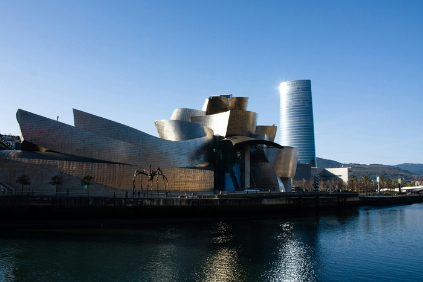

Historias, Tendencias y Consejos de Viaje.
-

Bilbao, primer destino vasco certificado como Destino Turístico Inteligente.
Fecha: 03/11/2025
Resumen: Este reconocimiento se ha logrado tras un riguroso proceso de implantación del Sistema de Gestión de Destino Turístico Inteligente (SGDTI), impulsado por Bilbao Ekintza EPEL (Área de Turismo) y con el apoyo experto de la propia Agencia Vasca de Turismo, Basquetour.
-
Las Aerolíneas Aumentan su Compromiso con el Combustible Ecológico.
Fecha: 28/10/2025
Resumen: Un informe reciente muestra la inversión masiva del sector aéreo en SAF (Combustible de Aviación Sostenible) para reducir su huella de carbono.
-
Guía Rápida: Cómo Elegir el Mejor Seguro de Viaje.
Fecha: 01/10/2025
Resumen: Consejos esenciales para viajeros independientes que buscan protección sin gastar de más.
-
Consejos de seguridad para viajar en solitario.
Fecha:30/09/2025
Resumen: Viajar solo exige planificación, sentido común y confianza en tus instintos para garantizar una experiencia segura y enriquecedora.
Otras Novedades y Destinos
- Europa: Rutas Sostenibles...
- Euronews Green - "¿Es posible viajar a Europa de forma sostenible?
- European Cyclists' Federation - EuroVelo
- Interrail - "Viajar de forma sostenible por Europa"
- América: Turismo de Aventura en los Andes.Sigue leyendo
- Asia: Tecnología y Cultura Milenaria.Sigue leyendo
Un análisis sobre opciones de viaje ecológicas en el continente. Sigue leyendo
La red de rutas ciclistas de largo recorrido en Europa (más de 90,000 km). Sigue leyendo
Guía oficial para planificar rutas en tren con el pase Interrail.Sigue leyendo